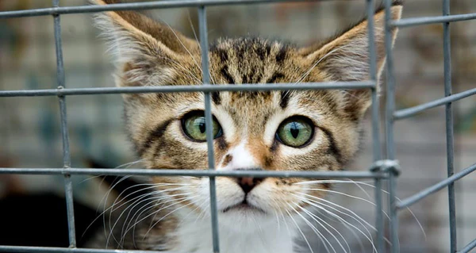
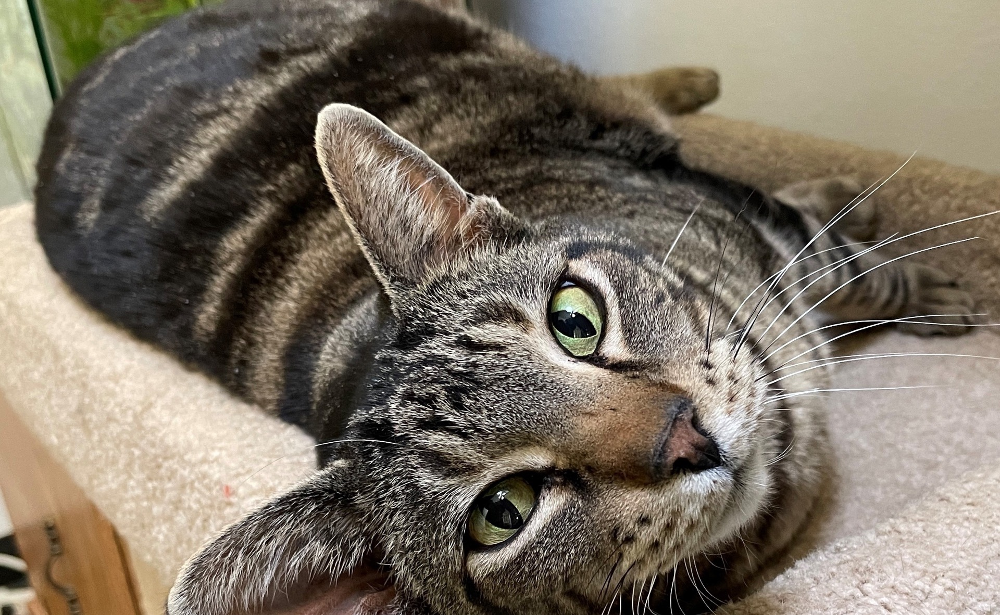
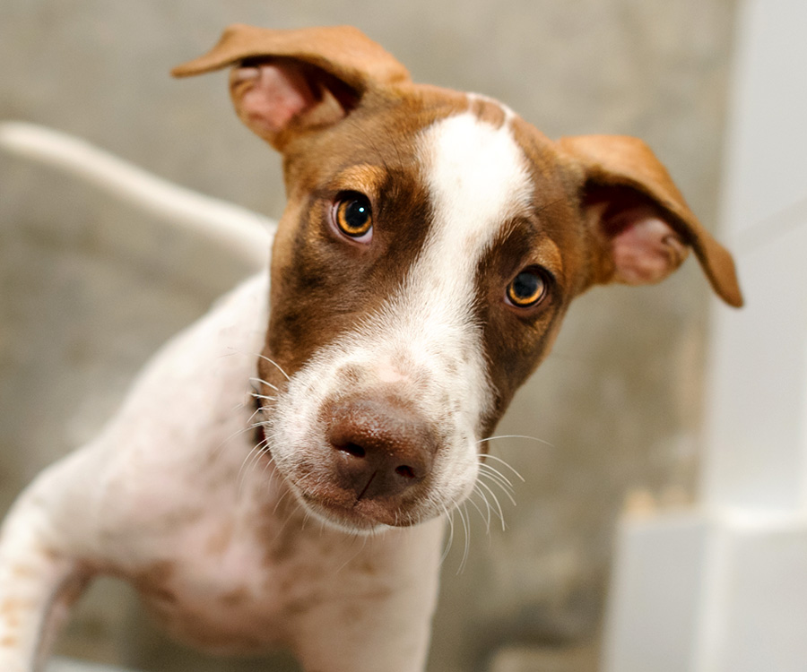

Oh hey! Just another adorable adoptable puppy here. Hanging out, waiting to find a forever family. Looking for love, basic training, and a good balance of exercise and cuddle time. Guaranteed to add some additional joy and sweetness to your life! Is there some room in your heart and home for Wombat? If you are interested in Wombat, please submit an adoption application!
Cece's friendly and adaptable nature makes her an ideal companion for all ages. One of her standout qualities is her impeccable litterbox use. She takes her cleanliness seriously and you can trust her to keep her living space tidy. Octavia is an extraordinary blend of the best qualities a cat can offer. She’s a social butterfly who thrives on human interaction. From the moment you meet her, you’ll be enchanted by her striking markings. Her gentleness and soft, melodic meows will make you feel loved and cherished every day.
They asked me to write a bio and I used my tiny claws to rip up the paper. Kittens be wildin’. Submit an application and someone who isn’t busy learning ferocity will let you know what I’m about.
I’m too busy learning about the world to write a bio, but I know it’s important that you know more about me so please submit an application to get more information.
Here is what his foster mom has to say about Lucky! “After just one week, Lucky has accomplished SO MUCH in his journey of learning how to be a dog who lives in a home rather than a shelter, which is where he has spent the majority of his life. He is such a lovable, goofy guy! Indoor Goose is totally different from Outdoor Goose. Inside, he finds a comfortable safe spot and stays put, keeping an eye and ear out for everything going on around him. Outside, he is a combination of Tigger and a frisky but graceful foal, bouncing and prancing with exuberance in the yard. Every day, his comfort zone in the house grows a little more. He will keep his distance, but he’s gotten very comfortable with new people coming to the house every day. My husband feeds him and takes him out first thing in the morning so the two of them bonded fairly quickly. He’s probably the most comfortable with me, because I spend the most time with him, but he’s also happy being with my daughter who is currently visiting us.” Submit an adoption application and come meet Lucky today!
What is up, world?! My name is Sprocket. Sometimes, the snack ladies call me Sprocket Rocket because I get what they call zoomies. I don’t really know what it means, but whatever it is, I like it! I also LOVE to walk through tall grass. It is probably my favorite thing to do on walks, and it tends to lead to these “zoomies.” I would love to show you how fast I can go!